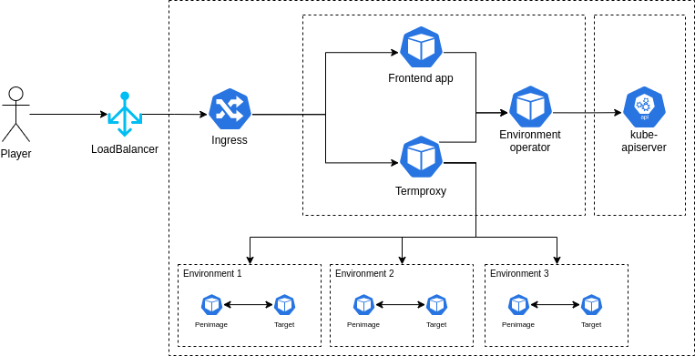

Introduction
NOTE: This documentation is still a work-in-progress!
Architecture


Developing
Developing on Windows
This guide will introduce you to deploying and working on the Acasi CTF platform on Windows by utilizing WSL 2 + Docker Desktop.
Install WSL 2 and Docker Desktop
As WSL 2 and Docker Desktop are commercial products, there is quite extensive documentation on how to install both of these available on their respective websites. The appropriate links are provided below.
Configure Docker Desktop
Enable WSL 2 Backend
To use Docker from within our WSL 2 virtual machine, we need to enable the WSL 2 based engine from within Docker Desktop. From the main Docker Desktop window, click the settings gear and check the "Use the WSL 2 based engine" option.
Additionally, navigate to "Resources", then to "WSL Integration". Check both the "Enable integration with my default WSL distro", and the "Ubuntu-20.04" slider.
After both of these steps have been taken, click the "Apply & Restart" button.
Add hosts entry
As an administrator, we need to add an entry to our local hosts file so that the "ctf" domain
directs to our local web server. Microsoft really enjoys hiding files deep inside the Windows
directory, the specific file we're looking for is C:\Windows\system32\drivers\etc\hosts.
The contents we want to add are as follows, do not remove anything from the file.
127.0.0.1 ctf
Visual Studio Code
If you have Visual Studio Code installed, open the file in there, and Code will ask if you want to escalate privileges in order to save the file.
Notepad
If you don't have Visual Studio Code installed, run Notepad as administrator. Open the hosts file and add the changes, then save it.
Install Kubernetes utilities
The following script will download and install a few utilities that we are going to use in the rest of this guide and for development on the platform.
curl https://raw.githubusercontent.com/acasi-ctf/docs/main/scripts/install-k8s-deps.sh | bash
Configure WSL 2
Create WSL user
In your WSL prompt, run the following, substituting USERNAME for the username of your choosing.
# Add new user
useradd -m USERNAME
# Set your user password
passwd USERNAME
# Add yourself to the sudo group
gpasswd --add USERNAME sudo
Edit /etc/wsl.conf and insert the following contents, substituting USERNAME with your chosen username from the prior step.
[user]
default=USERNAME
[interop]
appendWindowsPath=false
After applying this configuration, open a PowerShell window, run this WSL command and then reopen your WSL shell, as this will force it to stop.
wsl --shutdown
Configure minikube
minikube config set driver docker
minikube start
Add Bitnami Helm repo
helm repo add bitnami https://charts.bitnami.com/bitnami
Install Ingress controller
An ingress controller gives us the ability to run one web server which will proxy to one or more backend servers, allowing us to share a single hostname between those multiple backend servers.
kubectl apply -f https://raw.githubusercontent.com/kubernetes/ingress-nginx/controller-v0.48.1/deploy/static/provider/cloud/deploy.yaml
Clone and build source
Clone source
# Clone source from Git using SSH
git clone git@github.com:acasi-ctf/ctf.git
# Alternatively, use HTTPS if you don't have an SSH key installed
git clone https://github.com/acasi-ctf/ctf.git
Temporary step: check out dev_docs_branch
cd ctf
git checkout dev_docs
Build Docker images
Now, build the Docker images for the platform. Ensure you're in the directory of the ctf repository.
# Activate the Docker environment
eval $(minikube -p minikube docker-env)
# Build docker images
make docker
Deploy
Create namespace
Kubernetes namespaces are a method of isolating resources, and is good practice to keep separate projects in different namespaces for this reason.
# Create ctf namespace
kubectl create ns ctf
# Switch to new namespace
kubens ctf
Create and deploy manifests
cd deploy
./generate_ssh_keys.sh minikube
cd minikube
helm install postgres bitnami/postgresql --values postgres-values.yaml
cd ..
kustomize build minikube > minikube.yaml
kubectl apply -f minikube.yaml
Migrate the database
This is a potential task for improvement.
Currently, we need to manually migrate the PostgreSQL database. This is a fairly simple procedure, but ideally would be automated in the future.
We need to get a shell for the pod that runs the frontend API. List the pods running in the ctf namespace like so.
☁ ~ kubectl get pods
NAME READY STATUS RESTARTS AGE
ctf-frontend-584b4b9874-26vxx 1/1 Running 0 31d
ctf-operator-759457f978-d4q76 1/1 Running 0 31d
ctf-termproxy-69dc5c48cf-2pcl9 1/1 Running 0 31d
ctf-ui-dd5c4476b-lbc28 1/1 Running 0 31d
postgres-postgresql-0
Locate the pod that starts with ctf-frontend. Make a note of the full name, in our case it is
ctf-frontend-584b4b9874-26vxx. Execute a bash shell in the pod and run the commands as provided.
☁ ~ kubectl exec -it ctf-frontend-584b4b9874-26vxx -- /bin/bash
root@ctf-frontend-584b4b9874-26vxx:/app# cd frontend
root@ctf-frontend-584b4b9874-26vxx:/app/frontend# flask db upgrade
[...]
INFO [alembic.runtime.migration] Context impl PostgresqlImpl.
INFO [alembic.runtime.migration] Will assume transactional DDL.
INFO [alembic.runtime.migration] Running upgrade -> 6e85efd406c7, Initial migrations
INFO [alembic.runtime.migration] Running upgrade 6e85efd406c7 -> 5213f9e65a8c, Add documentation table and minor adjustments
root@ctf-frontend-f7f4f445f-8tzkr:/app/frontend# exit
If you see at least a couple of Running upgrade lines, the migration succeeded.
Accessing the UI
To access the UI, we need to enable the minikube tunnel. In your WSL shell, run minikube tunnel.
It should be noted that you will need to have the tunnel running during any development work, it is
not a permanent operation. You should see output similar to the following, requiring your sudo
password.
☁ ~ minikube tunnel
❗ The service ingress-nginx-controller requires privileged ports to be exposed: [80 443]
üîë sudo permission will be asked for it.
üèÉ Starting tunnel for service ingress-nginx-controller.
[sudo] password for lgorence:
The UI should now be accessible from your Windows machine by navigating to https://ctf/. As this is running locally (nor is it a valid TLD), you will not have a valid SSL certificate, and your browser will likely require you to accept the security risk. Brave may have issues with this, not allowing you to bypass the risk.
Developing on macOS
NOTE: This documentation is still a work-in-progress!
This guide will introduce you to deploying and working on the Acasi CTF platform on macOS by utilizing minikube.
This guide assumes you are using an Intel Mac, these instructions have not been tested on an Apple Silicon Mac, yet.
Prerequisites
- Homebrew
- Docker Desktop (optional, read this)
- Xcode
- Xcode Command Line Utilities
Install utilities
brew install minikube kubectx kubectl helm kustomize fzf
Start minikube
Warning: macOS beta users
If you are running the macOS 12.0 Monterey beta, you may need to use the Docker driver instead of the HyperKit driver, which is the default. If you do not, you might hit an error where minikube times out while trying to start the VM. Do this by running the following command before starting it.
minikube config set driver docker
Starting minikube
Start minikube by running the start subcommand.
minikube start
Kubernetes pre-requisites
Add Bitnami Helm repo
helm repo add bitnami https://charts.bitnami.com/bitnami
Install Ingress controller
An ingress controller gives us the ability to run one web server which will proxy to one or more backend servers, allowing us to share a single hostname between those multiple backend servers.
kubectl apply -f https://raw.githubusercontent.com/kubernetes/ingress-nginx/controller-v0.48.1/deploy/static/provider/cloud/deploy.yaml
Add hosts entry
We need to add an entry to our local hosts file so that the "ctf" domain directs to our local web server. The hosts files on macOS is located at /etc/hosts. As this is a system file, you must edit it as an administrator.
The contents we want to add are as follows, do not remove anything from the file.
127.0.0.1 ctf
Clone and build source
Clone source
# Clone source from Git using SSH
git clone git@github.com:acasi-ctf/ctf.git
# Alternatively, use HTTPS if you don't have an SSH key installed
git clone https://github.com/acasi-ctf/ctf.git
Temporary step: check out dev_docs_branch
cd ctf
git checkout dev_docs
Build Docker images
Now, build the Docker images for the platform. Ensure you're in the directory of the ctf repository.
# Activate the Docker environment
eval $(minikube -p minikube docker-env)
# Build docker images
make docker
Deploy
Create namespace
Kubernetes namespaces are a method of isolating resources, and is good practice to keep separate projects in different namespaces for this reason.
# Create ctf namespace
kubectl create ns ctf
# Switch to new namespace
kubens ctf
Create and deploy manifests
cd deploy
./generate_ssh_keys.sh minikube
cd minikube
helm install postgres bitnami/postgresql --values postgres-values.yaml
cd ..
kustomize build minikube > minikube.yaml
kubectl apply -f minikube.yaml
Migrate the database
This is a potential task for improvement.
Currently, we need to manually migrate the PostgreSQL database. This is a fairly simple procedure, but ideally would be automated in the future.
We need to get a shell for the pod that runs the frontend API. List the pods running in the ctf namespace like so.
☁ ~ kubectl get pods
NAME READY STATUS RESTARTS AGE
ctf-frontend-f7f4f445f-bkxtc 1/1 Running 0 4m41s
ctf-operator-7d9868665-95xxh 1/1 Running 0 4m41s
ctf-termproxy-7b9858f47b-6gflw 1/1 Running 0 4m41s
ctf-ui-74d56f8d-dljnz 1/1 Running 0 4m40s
postgres-postgresql-0 1/1 Running 0 5m18s
Locate the pod that starts with ctf-frontend. Make a note of the full name, in our case it is
ctf-frontend-584b4b9874-26vxx. Execute a bash shell in the pod and run the commands as provided.
☁ ~ kubectl exec -it ctf-frontend-f7f4f445f-bkxtc -- /bin/bash
root@ctf-frontend-f7f4f445f-bkxtc:/app# cd frontend
root@ctf-frontend-f7f4f445f-bkxtc:/app/frontend# flask db upgrade
/usr/local/lib/python3.9/site-packages/flask_sqlalchemy/__init__.py:872: FSADeprecationWarning: SQLALCHEMY_TRACK_MODIFICATIONS adds significant overhead and will be disabled by default in the future. Set it to True or False to suppress this warning.
warnings.warn(FSADeprecationWarning(
/usr/local/lib/python3.9/site-packages/jose/backends/cryptography_backend.py:18: CryptographyDeprecationWarning: int_from_bytes is deprecated, use int.from_bytes instead
from cryptography.utils import int_from_bytes, int_to_bytes
INFO [alembic.runtime.migration] Context impl PostgresqlImpl.
INFO [alembic.runtime.migration] Will assume transactional DDL.
INFO [alembic.runtime.migration] Running upgrade -> 6e85efd406c7, Initial migrations
INFO [alembic.runtime.migration] Running upgrade 6e85efd406c7 -> 5213f9e65a8c, Add documentation table and minor adjustments
If you see at least a couple of Running upgrade lines, the migration succeeded.
Accessing the UI
To access the UI, we need to enable the minikube tunnel. In your WSL shell, run minikube tunnel.
It should be noted that you will need to have the tunnel running during any development work, it is
not a permanent operation. You should see output similar to the following, requiring your sudo
password.
☁ ~ minikube tunnel
❗ The service ingress-nginx-controller requires privileged ports to be exposed: [80 443]
üîë sudo permission will be asked for it.
üèÉ Starting tunnel for service ingress-nginx-controller.
[sudo] password for lgorence:
The UI should now be accessible from macOS by navigating to https://ctf/. As this is running locally (nor is it a valid TLD), you will not have a valid SSL certificate, and your browser will likely require you to accept the security risk. Brave and Safari may have issues with this, not allowing you to bypass the risk or certain features not working correctly.
Introduction to Challenges
Challenge sets and challenges are the basis of the CTF platform. Challenge sets are groups of similar challenges, and challenges represent an individual problem or task to be performed by the user.
Challenge environments
A challenge environment is defined as the backend representation of a single instance of a challenge that a user has created. Environments use containers running on Kubernetes to provide various services for the user. One such instance might be that a user wants to learn more about a Linux environment and commands. In this case, the challenge would provide an SSH server that the Termproxy component connects to and would show this in the user interface as a terminal. Alternatively, it is also possible for a challenge environment to expose a web server in a similar way, and this may be used for SQL injection, XSS attacks, etc.
How do I create a challenge?
See the creating challenges page for more information on this topic.
Creating challenges
NOTE: This documentation is still a work-in-progress!
This article covers the relevant knowledge on how to create a terminal-based challenge. It is expected that the reader has some familiarity with Linux, Docker and Kubernetes. These skills will be needed to effectively build, run, and troubleshoot any issues you may have during this process.
Building a container
All challenge environments utilize at least one container running in Kubernetes. Because this article assumes that the reader wants to create a terminal-based challenge (rather than a web-based one), you will need to familiarize yourself with the penimage. The penimage is effectively a preconfigured Docker image of which all of our terminal-based challenges derive from. It utilizes an Ubuntu 20.04 LTS base. The reason it is recommended to use this is that it preinstalls an OpenSSH server with a start script that will inject the public key of the Termproxy microservice.
Example
The following is an example of a simple container which adds some Python scripts.
FROM ghcr.io/acasi-ctf/ctf/penimage:latest
COPY challenges/ciphers/challenges/caesar-cipher/code/Caesar-cipher.py /home/player
COPY challenges/ciphers/challenges/comprehensive-challenge/code/Mixed-Challenge-1.py /home/player
COPY challenges/ciphers/challenges/letter-to-number/code/Letter-to-Number.py /home/player
COPY challenges/ciphers/challenges/morse-code/code/Morse_code.py /home/player
COPY challenges/ciphers/challenges/reverse-cipher/code/Reverse.py /home/player
As you may notice, the user that is used in the container is player, and their home directory is
located at /home/player.
Challenge directory structure
To create a challenge set and children challenges, you must have a directory for that dedicated challenge set. The directory structure might look something like below. Each file is annotated with a brief comment describing briefly what it is.
challenges/kali/challenge-set.json # Challenge set definition (JSON)
challenges/kali/challenges/strings/template.yaml # Kubernetes CRD (YAML)
challenges/kali/challenges/strings/kubernetes.json # Kubernetes provisioner (JSON)
challenges/kali/challenges/strings/challenge.json # Challenge definition (JSON)
challenges/kali/challenges/strings/docs/StringsDocument.md # Documentation (Markdown)
challenges/kali/challenges/strings/src/lock.cpp # Source code for challenge (C++)
challenges/kali/challenges/binwalk/template.yaml # Kubernetes CRD (YAML)
challenges/kali/challenges/binwalk/kubernetes.json # Kubernetes provisioner (JSON)
challenges/kali/challenges/binwalk/challenge.json # Challenge definition (JSON)
challenges/kali/challenges/binwalk/docs/BinwalkDocument.md # Documentation (Markdown)
Challenge set definition
A challenge set definition contains unique identifiers and human-readable descriptor fields. It also links to each challenge by the name of the directory.
Fields
| Name | Type | Description |
|---|---|---|
| id | UUIDv4 | Unique identifier for this challenge set. This MUST be unique amongst all other challenge sets and challenges. |
| slug | string | Unique slug name for this challenge set. This MUST be unique amongst all other challenge sets. |
| name | string | Descriptive name that is displayed in the user interface. |
| description | string | Description of this challenge set displayed in the user interface. |
| version | string | Version of this challenge. |
| challenges | array of string | Array of strings that reference each challenge directory to be included in this challenge set. Use lowercases and dashes for these names. |
Example
{
"id": "4040a75a-037c-44c0-b1e2-bdcc6ceaddb0",
"slug": "kali",
"name": "Kali",
"description": "Challenge set that focuses on Kali Linux",
"version": "0.1.0",
"challenges": [
"strings",
"binwalk"
]
}
Challenge definition
A challenge definition contains unique identifiers, human-readable descriptor fields, and relevant information required by the platform to build and start the environment.
Fields
| Name | Type | Description |
|---|---|---|
| id | UUIDv4 | Unique identifier for this challenge. This MUST be unique amongst all other challenge sets and challenges. |
| slug | string | Unique slug name for this challenge. This MUST be unique amongst all other challenge. |
| name | string | Descriptive name that is displayed in the user interface. |
| description | string | Description of this challenge set displayed in the user interface. |
| provisioner | object | Object which contains field type, which can be either none or kubernetes. If kubernetes, kubernetes.json will be read as part of the provisioning process. |
| documentation | array of object | Array of objects which contain name and path fields, name is descriptive name for user interface and path is the path relative to the challenge.json file. |
Example
{
"id": "0c73d010-b360-4116-ba6f-92dad43c3e57",
"slug": "strings",
"name": "strings",
"description": "This is a challenge that demonstrates strings tool",
"provisioner": {
"type": "kubernetes"
},
"documentation": [
{
"name": "StringsDocument",
"path": "docs/StringsDocument.md"
}
]
}
Kubernetes provisioner
A challenge which utilizes Kubernetes as a provisioning backend (currently the only one supported), will require a kubernetes.json file in the same directory as challenge.json.
Fields
| Name | Type | Description |
|---|---|---|
| templatePath | UUIDv4 | Relative path to a YAML file containing the EnvironmentTemplate CRD for this challenge. |
| templateCRDVersion | string enum | Version of the template CRD. This currently only has one value, which is v1alpha1. This maps directly to the versions of the CRD in Kubernetes. |
Example
{
"templatePath": "template.yaml",
"templateCRDVersion": "v1alpha1"
}
Kubernetes CRD
A challenge which utilizes Kubernetes as a provisioning backend will require this environment template kind of resource. It combines the specs for one or more pods, and zero or more services and ingresses.
Example
apiVersion: ctf.acasi.info/v1alpha1
kind: EnvTemplate
metadata:
name: kali-strings
spec:
pods:
- metadata:
name: penimage
labels:
app: penimage
spec:
containers:
- name: penimage
image: ghcr.io/acasi-ctf/challenges/kali/strings:latest
services:
- metadata:
name: penimage-termproxy
spec:
selector:
app: penimage
ports:
- port: 22
ctfExpose: Termproxy